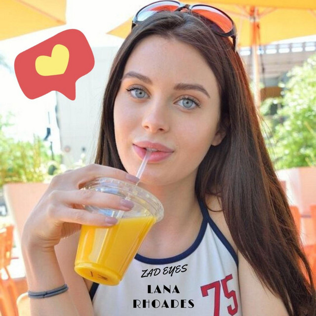

Datos Personales

Contacto
- lanarhoades@gmail.com
- +34 666 777 888
- Torrevieja, Malaga
Redes Sociales
Estudios
- IES Antonio Gala
- CFPM Sistema Microinformaticos y Redes
- 2014-2016
- IES Antonio Gala
- CFPM Astriz para Adultos VIP
- 2016-2018
Practicas
- GoldTech
- Fuente Palmera, Cordoba
- 2015-2016
- Faking Spanish
- Madrid
- 2017-2018
Experiencia
- Faking Spanish
- Madrid
- 2018-2020
- Fake Taxi
- Los Angeles
- 2020-2022
- Mad Lifes Realities
- Malaga
- 2024-Actualidad